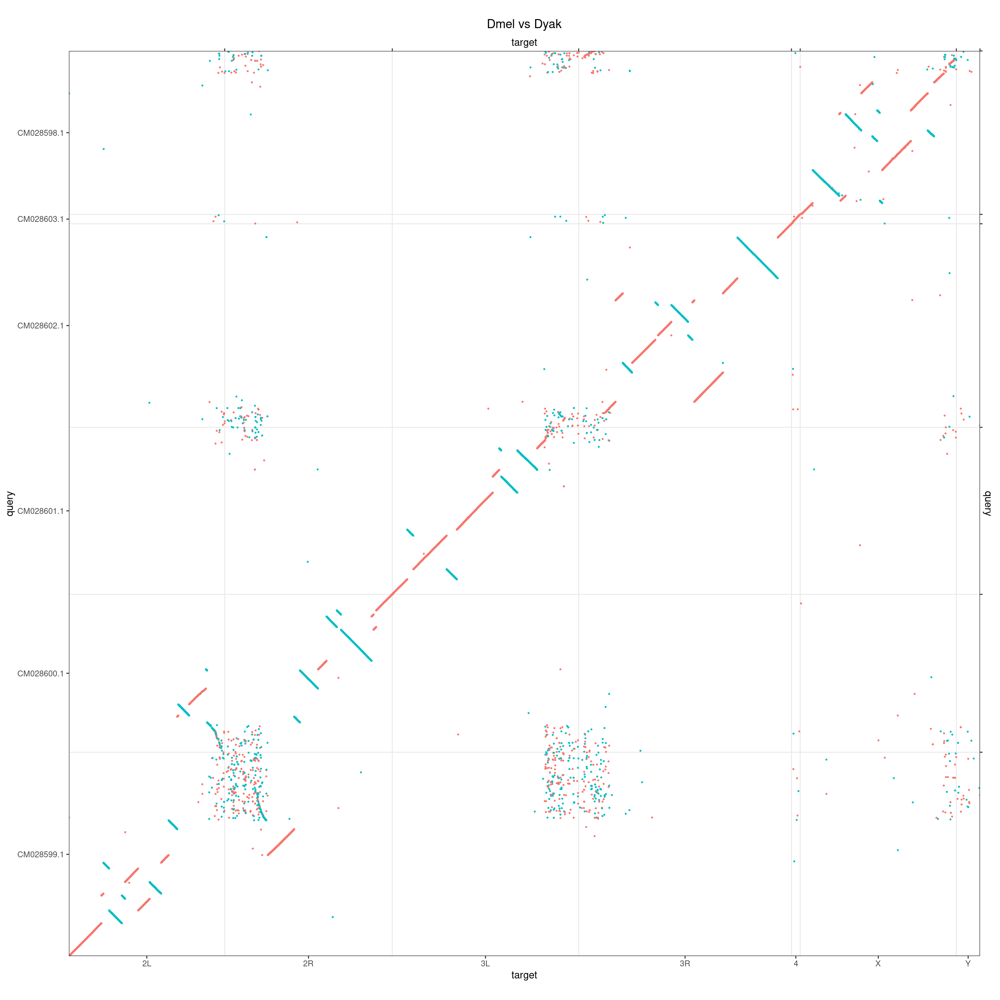
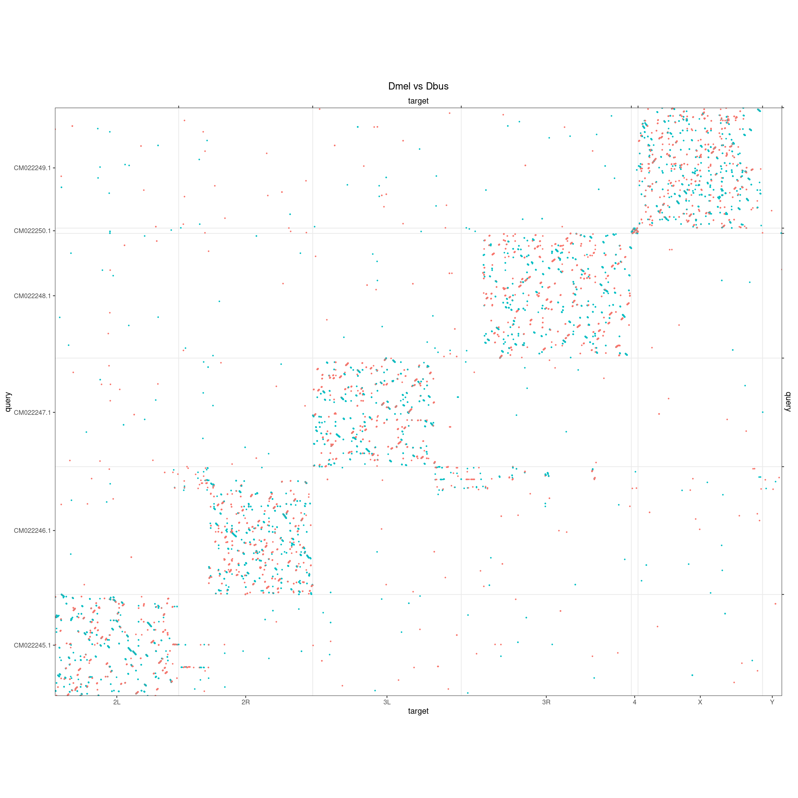

Whole-genome dot-plots
Charles Plessy
09 December, 2021
Source:vignettes/OxfordPlots.Rmd
OxfordPlots.Rmd
knitr::opts_knit$set(verbose = TRUE)Introduction
In this vignette I dot-plot pairs of genomes in parallel to illustrate differences in the extend of scrambling in Oikopleura compared to equivalent pairs in other genera.
The core functions used here are maintained in our GenomicBreaks R package, which is fully documented at: https://oist.github.io/GenomicBreaks.
See vignette("ParallelPlots", package = "OikScrambling") for parallel comparisons of homologous chromosomes in more than one species.
Load R pacakges and data
library('OikScrambling') |> suppressPackageStartupMessages()
(genomes <- OikScrambling:::loadAllGenomes())## List of length 6
## names(6): Oki Osa Bar Kum Aom Nor
(load("BreakPoints.Rdata"))## [1] "gbs" "unal" "coa" "unmap" "unalMap" "tra"
## [7] "tra2" "coa2" "unmap2" "longShort"Ciona
Ciona intestinalis (Plymouth vs Roscoff)
makeOxfordPlots(coa$Ply_Ros, type = "l") + ggtitle("Ciona intestinalis Plymouth vs Roscoff")
Ciona intestinalis (Plymouth) vs Ciona robusta
makeOxfordPlots(coa$Ply_Rob, type = "l") + ggtitle("Ciona intestinalis Plymouth vs Ciona robusta")
Troubleshoot of grid pattern
We see horizontal patterns what are they? I think they may be pericentromeric regions.
makeOxfordPlots(coa$Ply_Rob) + ggtitle("Ciona intestinalis Plymouth vs Ciona robusta")
coa$Ply_Rob |>
plyranges::filter(seqnames(query) %in% c("BJTB01000010.1", "BJTB01000011.1", "BJTB01000012.1", "BJTB01000013.1", "BJTB01000014.1")) |>
plyranges::filter(seqnames %in% c("BNJZ01000005.1", "BNJZ01000006.1", "BNJZ01000007.1", "BNJZ01000008.1", "BNJZ01000009.1")) |>
makeOxfordPlots() + ggtitle("C. int. P vs C. rob., subset near BJTB01000012.1 and BNJZ01000007.1")
coa$Ply_Rob |>
plyranges::filter(seqnames(query) %in% c("BJTB01000011.1", "BJTB01000012.1", "BJTB01000013.1")) |>
plyranges::filter(seqnames %in% c("BNJZ01000006.1", "BNJZ01000007.1", "BNJZ01000008.1")) |>
makeOxfordPlots() + ggtitle("C. int. P vs C. rob., subset near (closer) BJTB01000012.1 and BNJZ01000007.1")
coa$Ply_Rob |>
plyranges::filter(seqnames(query) %in% c("BJTB01000002.1", "BJTB01000003.1", "BJTB01000004.1", "BJTB01000005.1", "BJTB01000006.1")) |>
plyranges::filter(seqnames %in% c("BNJZ01000010.1", "BNJZ01000011.1", "BNJZ01000012.1", "BNJZ01000013.1", "BNJZ01000014.1")) |>
makeOxfordPlots() + ggtitle("C. int. P vs C. rob., subset near BJTB01000004.1 and BNJZ01000012.1")
coa$Ply_Rob |>
plyranges::filter(seqnames(query) %in% c("BJTB01000003.1", "BJTB01000004.1", "BJTB01000005.1")) |>
plyranges::filter(seqnames %in% c("BNJZ01000011.1", "BNJZ01000012.1", "BNJZ01000013.1")) |>
makeOxfordPlots() + ggtitle("C. int. P vs C. rob., subset near (closer) BJTB01000004.1 and BNJZ01000012.1")
Ciona intestinalis (Plymouth) vs Ciona savignyi
makeOxfordPlots(coa$Ply_Sav, type = "l") + ggtitle("Ciona intestinalis Plymouth vs Ciona savignyi")


Drosophila
makeOxfordPlots(coa$Dme_Dma, type = "l") + ggtitle("Dmel vs Dmau")
makeOxfordPlots(coa$Dme_Dya, type = "l") + ggtitle("Dmel vs Dyak")
makeOxfordPlots(coa$Dme_Dsu, type = "l") + ggtitle("Dmel vs Dsub")
makeOxfordPlots(coa$Dme_Dbu, type = "l") + ggtitle("Dmel vs Dbus")